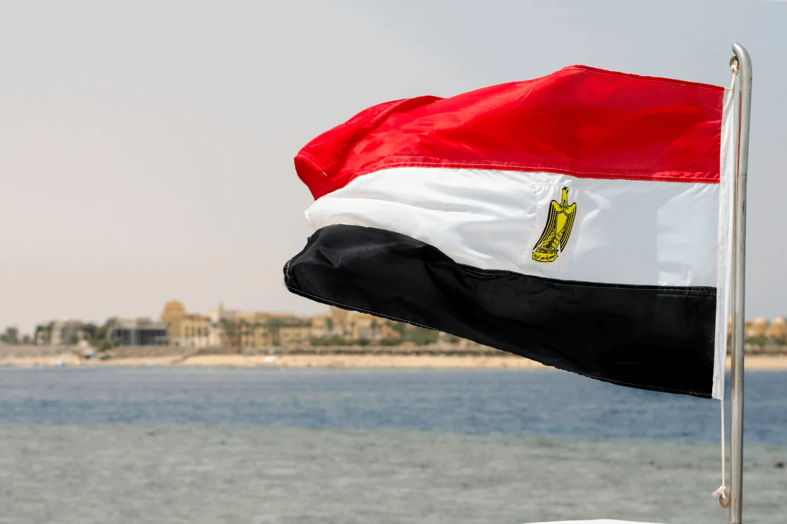

O Egito é um país que faz parte do Oriente Médio, possui uma cultura riquíssima e história extraordinária. É banhado pelo Mar Vermelho e pelo Mar Mediterrâneo. Por isso, milhares de pessoas visitam o país todos os meses e anos. As exuberantes pirâmides são as atrações mais conhecidas e que chamam atenção dos visitantes que vêm de diferentes partes do mundo.
A culinária egípcia segue bastante a tendência da culinária árabe, com muitos pratos que também são encontrados em outros países de mesma raiz. No Egito é fácil encontrar pratos como falafel, shawarma e kafta, e, como boa parte da culinária árabe, muitos desses pratos são veganos.
1. Na época do Egito Antigo, quem matasse um gato era punido com pena de morte. O animal era considerado um ser cheio de magia, que poderia trazer muita sorte aos seus donos. Eles usavam joias e eram alimentados com as melhores iguarias.
2. Como na maioria dos países muçulmanos, o domingo é considerado um dia útil no Egito. Às sextas e aos sábados são considerados fim de semana. Sendo a sexta, o dia mais importante para os muçulmanos, é o dia do descanso.
3. É proibido beber em locais públicos, você pode ser preso caso desobedeça. Bebidas alcoólicas são vendidas apenas em estabelecimentos comerciais autorizados.
4. O Sudão é o país que possui mais pirâmides, o Egito fica em segundo lugar nesse quesito.
5. Os egípcios foram os responsáveis por inventar o calendário com 365 dias.
6. A capital do Egito, Cairo, é a maior cidade de toda África e Oriente Médio.
